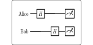

Communication / 通信 | 难度：中级 | 预计时间：15 分钟
BB84 是第一个量子密钥分发协议，利用量子力学原理实现无条件安全的密钥分发。
经典加密依赖计算复杂度（如 RSA）
量子计算机可以破解经典加密
经典密钥分发需要可信信道
BB84 提供信息论安全性（不依赖计算复杂度）
量子不可克隆定理保证窃听可检测
是后量子密码学的基础
量子密钥分发网络
量子安全通信
量子互联网
from quonic.algorithms import bb84
# Run BB84 protocol
result = bb84(n_bits=100, noise=0.0)
print(f"Shared key: {result.key}")
print(f"Key length: {len(result.key)}")预期输出：
Shared key: 01101001...
Key length: 50
BB84 协议步骤：
Alice 随机选择比特和基
Alice 制备量子态并发送给 Bob
Bob 随机选择基测量
Alice 和 Bob 公开比较基
保留基相同的比特作为密钥
安全性基于量子不可克隆定理： \[\begin{equation} |\psi\rangle \neq |\phi\rangle \Rightarrow \text{无法完美复制} \end{equation}\]
在 Bloch 球上，BB84 使用两个正交基：
计算基：\(\{|0\rangle, |1\rangle\}\)
Hadamard 基：\(\{|+\rangle, |-\rangle\}\)
窃听者不知道 Alice 使用的基，测量会引入错误。
from quonic.algorithms import bb84
# bb84(n_bits, noise)
# n_bits: number of bits to generate
# noise: channel noise rate
result = bb84(n_bits=100, noise=0.0)
# result.key: shared secret key
# result.error_rate: quantum bit error rate
print(f"Shared key: {result.key}")
print(f"Error rate: {result.error_rate}")# BB84 with channel noise
result = bb84(n_bits=100, noise=0.05)
print(f"Error rate: {result.error_rate}")
# If error rate > 11%, channel may be compromised# Eavesdropping detection
result = bb84(n_bits=100, noise=0.0)
# Check error rate
if result.error_rate > 0.11:
print("Eavesdropper detected!")
else:
print("Channel is secure")BB84 可以用于构建量子密钥分发网络，实现安全通信。
BB84 提供信息论安全性，适用于高安全需求的通信。
BB84 是量子互联网的基础协议之一。
BB84 的安全性基于量子不可克隆定理。窃听者无法完美复制量子态，测量会引入错误。
理想情况下，BB84 的密钥生成率约为 50%（基匹配的概率）。
BB84 提供信息论安全性，不依赖计算复杂度，因此可以抵抗量子计算机。
量子比特和叠加态
Hadamard 门和测量
量子不可克隆定理
E91 协议（基于纠缠的 QKD）
量子中继
量子互联网
from quonic.algorithms import bb84
result = bb84(n_bits=100, noise=0.0)
print(f"Shared key: {result.key}")